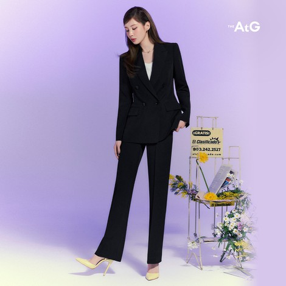
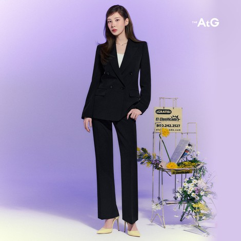
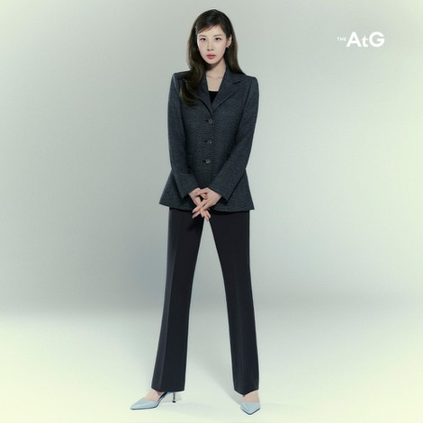

03자바스트립트_제어문03_반복문을 활용한 웹콘텐츠 구현하기
- .querySelectorAll('선택자') : 문서안에 선택한 요소들을 모두 선택하기
- .querySelector('선택자') : 문서 안에 선택한 요소를 선택하기
- .length : 선택한 요소의 개수를 구해주는 메서드
- .addEventListener : 선택한 요소에 이벤트를 주고자 할 때 사용
- .classList.remove('클래스명') : 선택한 요소에 클래스서식을 제거함
- .classList.add('클래스명') : 선택한 요소에 클래스서식을 적용함
- .parentNode : 선택한 요소의 부모요소를 찾아서 선택함
-

-

-


-